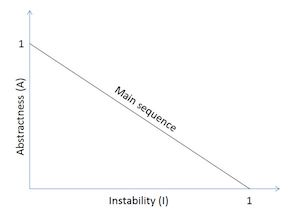

This metric is used to measure the degree of abstraction of the package and is somewhat similar to the instability. Regarding the definition, abstractness is the number of abstract classes in the package to the number of all classes.
Preferred values for the metric A should take extreme values close to 0 or 1. Packages that are stable (metric I close to 0), which means they are dependent at a very low level on other packages, should also be abstract (metric A close to 1). In turn, the very unstable packages (metric I close to 1) should consist of concrete classes (A metric close to 0). Additionally, it is worth mentioning that combining abstractness and stability enabled Martin to formulate thesis about the existence of main sequence (see picture below).

In the optimal case, the instability of the class is compensated by its abstractness, there is an equation I + A = 1. Classes that were well designed should group themselves around this graph end points along the main sequence.
Included in the set of metrics proposed by Robert C. Martin, see
Martin, R. C. OO design quality metrics. An analysis of dependencies. 28 October 1994.
Martin, R. C. Agile Software Development: Principles, Patterns, and Practices. Alant Apt Series. Prentice Hall, Upper Saddle River, NJ, USA 2002